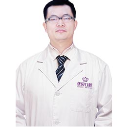

-

刘洋 医师
种植修复、固定修复、可摘局部义齿修复。专长为显微疑难根管治疗，CEREC椅旁即刻修复，前牙美学设计与修复，在美学失败病例再修复、种植修复、固定修复、可摘局部义齿修复、附着体应用修复、口内牙体治疗、外科拔牙等领域造诣颇深。[查看详情]
-
宋铁砾 医师
擅长儿童、成人各类牙颌畸形的矫治，及各类复杂疑难病例的矫治。多次参加各种口腔正畸专业会议及相关技术培训，熟悉各种国内外正畸先进技术，并在国内核心期刊发表文章数篇。[查看详情]
-

张鹏 医师
擅长儿童、成人各类牙颌畸形的矫治，及各类复杂疑难病例的矫治。多次参加各种口腔正畸专业会议及相关技术培训，熟悉各种国内外正畸先进技术，并在国内核心期刊发表文章数篇。[查看详情]
-
徐涛 医师
博爱口腔医生 口腔学博士 北京大学口腔医学院第三门诊部主任 美国宾夕法尼亚大学牙科学院访问学者 中华口腔医学会会员。种植牙修复、前牙美学种植、微创种植、即刻种植[查看详情]
-
陈桦 医师
儿童及成人各种牙列不齐的矫正，替牙期的功能矫治及成人失败病例的二次矫正，精通国际主流矫正技术，舌侧矫治技术，隐形矫治技术，自锁矫治技术等多曲方丝、MBT、OPAK矫治技术等[查看详情]